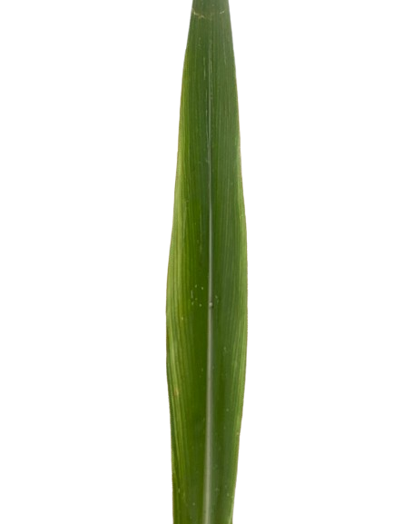

Les herbes monocotylédones sont des plantes à fleurs dont les graines contiennent un seul cotylédon c'est-à-dire une seule feuille embryonnaire
Les herbes dicotylédones sont des plantes à fleurs dont les graines contiennent deux cotylédons c'est-à-dire deux feuilles embryonnaires.

Les monocotylédones ont une seule cotylédon (feuille embryonnaire), des nervures foliaires parallèles, et des faisceaux vasculaires dispersés. Les dicotylédones ont deux cotylédons des nervures foliaires réticulées, et des faisceaux vasculaires en anneau Les monocotylédones comprennent des plantes comme les graminées tandis que les dicotylédones incluent des arbres et des arbustes
UNE SEULE FEUILLE COTYLÉDONE DANS LA GRAINE
NERVATION PARALLÈLE, DES NERVURES LONGITUDINALES
TIGES RONDES ET CREUSES, AVEC DES NŒUDS (RENFLEMENTS)
DEUX FEUILLES COTYLÉDONES DANS LA GRAINE
NERVATION RAMIFIÉE, DES NERVURE CENTRALES
TIGES SOLIDES, AVEC DES NŒUDS ET LES BRANCHES S'ATTACHENT
Les mauvaises herbes sont des plantes indésirables qui poussent dans des espaces cultivés, nuisant à la croissance des plantes désirées en compétitionnant pour les ressources.

Les adventices sont des plantes indésirables qui poussent spontanément dans les cultures, nuisant à leur développement en concurrence pour les ressources
Les deux termes puissent souvent etre utilises de manière interchangeable "mauvaises herbes" est plus informel et se concentre spécifiquement sur les plantes non désirées dans un environnement cultivé,tandis que "adventices"est un terme plus large et technique qui englobe toutes les plantes non intentionnellement présentes dans un espace cultivé qu'elles soient considérées comme nuisibles ou non.